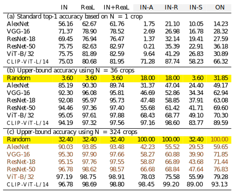

Enhancing the clarity of an object by zooming in often results in correct classification.
Image classifiers are information-discarding machines, by design. Yet, how these models discard information remains mysterious. We hypothesize that one way for image classifiers to reach high accuracy is to first zoom to the most discriminative region in the image and then extract features from there to predict image labels, discarding the rest of the image. Studying six popular networks ranging from AlexNet to CLIP, we find that proper framing of the input image can lead to the correct classification of 98.91% of ImageNet images. Furthermore, we uncover positional biases in various datasets, especially a strong center bias in two popular datasets: ImageNet-A and ObjectNet. Finally, leveraging our insights into the potential of zooming, we propose a test-time augmentation (TTA) technique that improves classification accuracy by forcing models to explicitly perform zoom-in operations before making predictions. Our method is more interpretable, accurate, and faster than MEMO, a state-of-the-art (SOTA) TTA method. We introduce ImageNet-Hard, a new benchmark that challenges SOTA classifiers including large vision-language models even when optimal zooming is allowed.


Each subfigure shows an input image, predicted label, and confidence score from an ImageNet-trained classifier (top and middle: ResNet-50; bottom: ViT-B/32). With the standard center-crop image transform, all 3 samples were misclassified (left-most column). Adjusting the framing by zooming in or out leads to correct predictions.
Enhancing the clarity of an object by zooming in often results in correct classification.
Proper framing of an object through zooming out can enhance the accuracy of its classification.
Our method involves a zooming process that combines resizing and cropping operations. First, we resize the image so that its smaller dimension matches a target scale (S), and then divide it into 3x3 patches. A 224x224px patch is extracted from the center of each patch, with zero padding added if necessary. We demonstrate that this simple approach is sufficient to solve up to 99.44% of the images in the ImageNet dataset.
Overview of the process

Demonstration of how different image patches change when we alter the zoom scale.

Demonstration of the use of nine distinct crops to capture different regions of an image from the ImageNet-A dataset. The ground truth, a mallard, is situated at the bottom of the image. While center cropping fails to classify the bird correctly, crops at the bottom allow for accurate classification.
To understand the potential of using zooming to improve image classification accuracy, first, we establish an upper bound (i.e., when an "optimal" zoom is given). That is, we apply 36 scales * 9 anchors = 324 zoom transformations to each image to generate 324 zoomed versions of the same input. We then feed all 324 versions to each network and label an image "correctly classified given the optimal zoom" if at least 1 of the 324 is correctly labeled. This experiment also importantly informs the community of the type of image that cannot be correctly labeled even with an optimal zooming strategy.
On in-distribution data (ImageNet & ImageNet-ReaL) there exists a substantial improvement when models are provided with an optimal zoom, either selected from 36 (b) or 324 pre-defined zoom crops (c). In contrast, OOD benchmarks still pose a significant challenge to IN-trained models even with optimal zooming (i.e., all upper-bound accuracy scores < 80%).
State-of-the-art test-time augmentation methods, such as MEMO, finetune a pre-trained classifier at test time to achieve a more accurate prediction. Specifically, MEMO attempts to find a network that produces a low-entropy predicted label over a set of K=16 augmented versions of the test image I and then runs this finetuned model on I again to produce the final prediction. While improving accuracy, MEMO requires a pre-defined set of diverse augmentation transforms (e.g., sheer, rotate, and solarize in AugMix). Yet, the hyperparameters for each type of transform are hard-coded, and the reasons why some of such transform help classification are unknown.
Our goal is to improve MEMO's accuracy and interpretability by replacing all AugMix transforms with only zoom-in transforms. Intuitively, we let a classifier first look at all zoomed-in frames of the input image (at different zoom scales and locations) and then make up its mind to achieve the most confident prediction.
MEMO + RRC (i.e., random zoom-in transforms) outperforms baselines and the default MEMO.
@article{taesiri2023zoom,
title={ImageNet-Hard: The Hardest Images Remaining from a Study of the Power of Zoom and Spatial Biases in Image Classification},
author={Taesiri, Mohammad Reza and Nguyen, Giang and Habchi, Sarra and Bezemer, Cor-Paul and Nguyen, Anh},
journal={arXiv preprint arXiv:2304.05538},
year={2023}
}